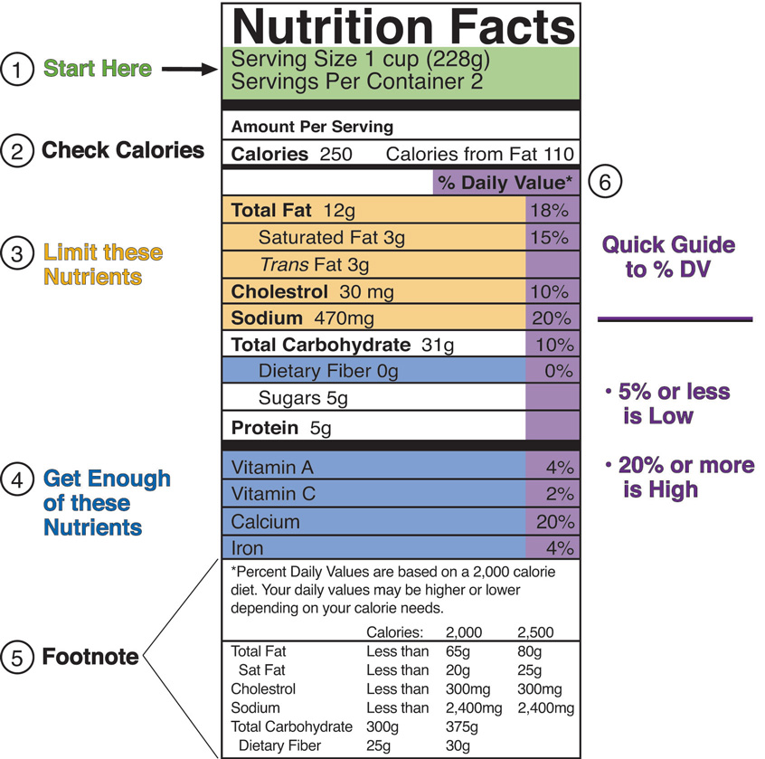

Understanding the significance of dietary guidelines and how to use DRIs in planning your nutrient intakes can make you better equipped to select the right foods the next time you go to the supermarket.
In the United States, the Nutrition Labeling and Education Act passed in 1990 and came into effect in 1994. In Canada, mandatory labeling came into effect in 2005. As a result, all packaged foods sold in the United States and Canada must have nutrition labels that accurately reflect the contents of the food products. There are several mandated nutrients and some optional ones that manufacturers or packagers include. Table 2.8 "Mandatory and Optional Inclusions on Nutrition Labels" lists the mandatory and optional inclusions.
Table 2.8 Mandatory and Optional Inclusions on Nutrition Labels
| Mandatory Inclusion | Optional Inclusion |
|---|---|
| Total Calories | Calories from saturated fats |
| Calories from fat | Polyunsaturated fat |
| Total fat | Monounsaturated fat |
| Saturated fat | Potassium |
| Cholesterol | Soluble fiber |
| Total carbohydrates | Sugar alcohol |
| Dietary fiber | Other carbohydrates |
| Sugars | Percent of vitamin A present as beta-carotene |
| Vitamins A and C | Other essential vitamins and minerals |
| Calcium | |
| Iron |
Source: US Food and Drug Administration. “Food Labeling Guide.” Last updated February 10, 2012. http://www.fda.gov.
There are other types of information that are required by law to appear somewhere on the consumer packaging. They include:
The Nutrition Facts panelFound on most packaged foods, it contains specific amounts of nutrients and also compares the amounts of nutrients in the food and the recommended intake values. These comparisons are reported as percent DV. provides a wealth of information about the nutritional content of the product. The information also allows shoppers to compare products. Because the serving sizes are included on the label, you can see how much of each nutrient is in each serving to make the comparisons. Knowing how to read the label is important because of the way some foods are presented. For example, a bag of peanuts at the grocery store may seem like a healthy snack to eat on the way to class. But have a look at that label. Does it contain one serving, or multiple servings? Unless you are buying the individual serving packages, chances are the bag you picked up is at least eight servings, if not more.
According to the 2010 health and diet survey released by the FDA, 54 percent of first-time buyers of a product will check the food label and will use this information to evaluate fat, calorie, vitamin, and sodium content.US Food and Drug Administration. “Survey Shows Gain in Food-Label Use, Health/Diet Awareness.” March 2, 2010. http://www.fda.gov/ForConsumers/ConsumerUpdates/ucm202611.htm#FoodLabelHighlights. The survey also notes that more Americans are using food labels and are showing an increased awareness of the connection between diet and health. Having reliable food labels is a top priority of the FDA, which has a new initiative to prepare guidelines for the food industry to construct “front of package” labeling that will make it even easier for Americans to choose healthy foods. Stay tuned for the newest on food labeling by visiting the FDA website: http://www.fda.gov/Food/LabelingNutrition/default.htm.
The Food Label and You
The FDA has prepared a new video about nutrition labeling that is packed with helpful information. You can watch the full-length video or individual segments.
http://www.fda.gov/Food/ResourcesForYou/Consumers/NFLPM/default.htm
The first part of the Nutrition Facts panel gives you information on the serving size and how many servings are in the container. For example, a label on a box of crackers might tell you that twenty crackers equals one serving and that the whole box contains 10 servings. All other values listed thereafter, from the calories to the dietary fiber, are based on this one serving. On the panel, the serving size is followed by the number of calories and then a list of selected nutrients. You will also see “Percent Daily Value” on the far right-hand side. This helps you determine if the food is a good source of a particular nutrient or not. The Daily Value (DV)Based upon the RDI of a specific nutrient in a 2,000 kilocalorie diet. represents the recommended amount of a given nutrient based on the RDI of that nutrient in a 2,000-kilocalorie diet (Figure 2.2 "Determining Your Nutrient Allowances per Day"). The percentage of Daily Value (percent DV)The percentage of the amount of the nutrient in relationship to the DV. They are applicable only for a 2,000-calorie daily diet (not 2,500 calories). represents the proportion of the total daily recommended amount that you will get from one serving of the food. For example, in the food label in Figure 2.2 "Determining Your Nutrient Allowances per Day", the percent DV of calcium for one serving of macaroni-and-cheese is 20 percent, which means that one serving of macaroni and cheese provides 20 percent of the daily recommended calcium intake. Since the DV for calcium is 1,000 milligrams, the food producer determined the percent DV for calcium by taking the calcium content in milligrams in each serving, and dividing it by 1,000 milligrams, and then multiplying it by 100 to get it into percentage format. Whether you consume 2,000 calories per day or not you can still use the percent DV as a target reference.
Generally, a percent DV of 5 is considered low and a percent DV of 20 is considered high. This means, as a general rule, for fat, saturated fat, trans fat, cholesterol, or sodium, look for foods with a low percent DV. Alternatively, when concentrating on essential mineral or vitamin intake, look for a high percent DV. To figure out your fat allowance remaining for the day after consuming one serving of macaroni-and-cheese, look at the percent DV for fat, which is 18 percent, and subtract it from 100 percent. To know this amount in grams of fat, read the footnote of the food label to find that the recommended maximum amount of fat grams to consume per day for a 2,000 kilocalories per day diet is 65 grams. Eighteen percent of sixty-five equals about 12 grams. This means that 53 grams of fat are remaining in your fat allowance. Remember, to have a healthy diet the recommendation is to eat less than this amount of fat grams per day, especially if you want to lose weight.
Table 2.9 DVs Based on a Caloric Intake of 2,000 Calories (For Adults and Children Four or More Years of Age)
| Food Component | DV |
|---|---|
| Total fat | 65 g |
| Saturated fat | 20 g |
| Cholesterol | 300 mg |
| Sodium | 2,400 mg |
| Potassium | 3,500 mg |
| Total carbohydrate | 300 g |
| Dietary fiber | 25 g |
| Protein | 50 g |
| Vitamin A | 5,000 IU |
| Vitamin C | 60 mg |
| Calcium | 1,000 mg |
| Iron | 18 mg |
| Vitamin D | 400 IU |
| Vitamin E | 30 IU |
| Vitamin K | 80 micrograms µg |
| Thiamin | 1.5 mg |
| Riboflavin | 1.7 mg |
| Niacin | 20 mg |
| Vitamin B6 | 2 mg |
| Folate | 400 µg |
| Vitamin B12 | 6 µg |
| Biotin | 300 µg |
| Pantothenic acid | 10 mg |
| Phosphorus | 1,000 mg |
| Iodine | 150 µg |
| Magnesium | 400 mg |
| Zinc | 15 mg |
| Selenium | 70 µg |
| Copper | 2 mg |
| Manganese | 2 mg |
| Chromium | 120 µg |
| Molybdenum | 75 µg |
| Chloride | 3,400 mg |
Figure 2.2 Determining Your Nutrient Allowances per Day
Pictured here is a sample label for macaroni and cheese.
Source: FDA. “How to Understand and Use the Nutrition Facts Panel.” Last updated February 15, 2012. http://www.fda.gov/food/labelingnutrition/consumerinformation/ucm078889.htm#dvs
Of course, this is a lot of information to put on a label and some products are too small to accommodate it all. In the case of small packages, such as small containers of yogurt, candy, or fruit bars, permission has been granted to use an abbreviated version of the Nutrition Facts panel. To learn additional details about all of the information contained within the Nutrition Facts panel, see the following website: http://www.fda.gov/Food/ResourcesForYou/Consumers/NFLPM/ucm274593.htm
How to Read Food Labels
Pay attention to the fine print when grocery shopping.
http://videos.howstuffworks.com/fit-tv/14212-diet-doctor-how-to-read-food-labels-video.htm
In addition to mandating nutrients and ingredients that must appear on food labels, any nutrient-content claims must meet certain requirements. For example, a manufacturer cannot claim that a food is fat-free or low-fat if it is not, in reality, fat-free or low-fat. Low-fat indicates that the product has three or fewer grams of fat; low salt indicates there are fewer than 140 milligrams of sodium, and low-cholesterol indicates there are fewer than 20 milligrams of cholesterol and two grams of saturated fat. See Table 2.10 "Common Label Terms Defined" for some examples.US Food and Drug Administration. “Additional Requirements for Nutrient Content Claims.” Appendix B in Food Labeling Guide (October 2009). http://www.fda.gov/Food/GuidanceComplianceRegulatoryInformation/GuidanceDocuments/FoodLabelingNutrition/FoodLabelingGuide/ucm064916.htm.
Table 2.10 Common Label Terms Defined
| Term | Explanation |
|---|---|
| Lean | Fewer than a set amount of grams of fat for that particular cut of meat |
| High | Contains more than 20% of the nutrient’s DV |
| Good source | Contains 10 to 19% of nutrient’s DV |
| Light/lite | Contains ⅓ fewer calories or 50% less fat; if more than half of calories come from fat, then fat content must be reduced by 50% or more |
| Organic | Contains 95% organic ingredients |
Source: US Food and Drug Administration. “Food Labeling Guide.” Last updated February 10, 2012. http://www.fda.gov.
Often we hear news of a particular nutrient or food product that contributes to our health or may prevent disease. A health claim is a statement that links a particular food with a reduced risk of developing disease. As such, health claims such as “reduces heart disease,” must be evaluated by the FDA before it may appear on packaging. Prior to the passage of the NLEA products that made such claims were categorized as drugs and not food. All health claims must be substantiated by scientific evidence in order for it to be approved and put on a food label. To avoid having companies making false claims, laws also regulate how health claims are presented on food packaging. In addition to the claim being backed up by scientific evidence, it may never claim to cure or treat the disease. For a detailed list of approved health claims, visit: http://www.fda.gov/Food/LabelingNutrition/LabelClaims/HealthClaimsMeeting SignificantScientificAgreementSSA/default.htm#Approved_Health_Claims.
While health claims must be backed up by hard scientific evidence, qualified health claims have supportive evidence, which is not as definitive as with health claims. The evidence may suggest that the food or nutrient is beneficial. Wording for this type of claim may look like this: “Supportive but not conclusive research shows that consumption of EPA and DHA omega-3 fatty acids may reduce the risk of coronary artery disease. One serving of [name of food] provides [X] grams of EPA and DHA omega-3 fatty acids. [See nutrition information for total fat, saturated fat, and cholesterol content.]US Food and Drug Administration. “FDA Announces Qualified Health Claims for Omega-3 Fatty Acids.” September 8, 2004. http://www.fda.gov/SiteIndex/ucm108351.htm.
Some companies claim that certain foods and nutrients have benefits for health even though no scientific evidence exists. In these cases, food labels are permitted to claim that you may benefit from the food because it may boost your immune system, for example. There may not be claims of diagnosis, cures, treatment, or disease prevention, and there must be a disclaimer that the FDA has not evaluated the claim.US Food and Drug Administration. “Claims That Can Be Made for Conventional Foods and Dietary Supplements.” September 2003. http://www.fda.gov/Food/LabelingNutrition/LabelClaims/ucm111447.htm.
Food manufacturers are required by the FDA to list on their packages if the product contains any of the eight most common ingredients that cause food allergies. These eight common allergens are as follows: milk, eggs, peanuts, tree nuts, fish, shellfish, soy, and wheat. (More information on these allergens will be discussed in Chapter 11 "Energy Balance and Body Weight".) The FDA does not require warnings that cross contamination may occur during packaging, however most manufacturers include this advisory as a courtesy. For instance, you may notice a label that states, “This product is manufactured in a factory that also processes peanuts.” If you have food allergies, it is best to avoid products that may have been contaminated with the allergen.